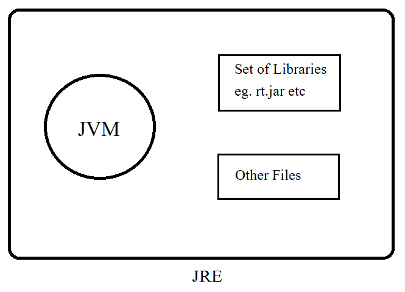
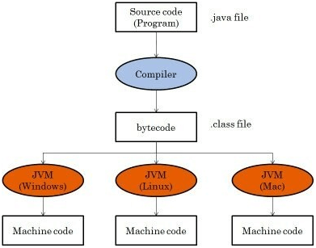

OOP in JAVA
On the Basis of Tribhuvan University BCA 3rd Semester Syllabus
Unit-1 Introduction to JAVA
1) Definition:
- Java is a simple, object oriented, distributed, compiled/interpreted, robust, secure, architecutre neutral, portable, high perfomance, multithreaded and dynamic language.
- It is designed in 1995 by Sun MicroSystem, created by James Gosling and team.
- It is platform independent, which means that we only need to write the program once to be able to run it on a number of different platforms.
- It is used to develop apps for Google's Android OS, Various Desktop Applications, such as multimedia players, antivirus programs, web applications, banking software and many more.
Features of JAVA
i. Simple
Java is very easy to learn and its syntax is simple, clean and easy to understand. According to Sun, Java languate is simple programming language because
- Java syntax is based on C++.
- Java has removed many complicated and rarely used features, for eg: explicit pointers, operator overloading etc.
- There is no need to remove unrefrence objects because there is and Automatic Garbage Collection in Java
ii. Object-oriented Programming
Java is an oop language. Everything in java is an object. Object-oriented means we organize our software as a combination of different types of objects that incorporates both data and behavior.
iii. Platform Independent
Java code can be run on multiple platforms. For example, Windows, Linux, Sun Solaries, Maclos etc. Java code is compiled by the compiler and converted into byte conde. This byte code is platform independent code because it can be run on multiple platforms i.e. Write Once and Run Anywhere (WORA).
iv. Secured
Java is best known for its security. With Java, we can develop virus free systems. Java is secured because
- No explicite pointer
- Java programs run inside a virtual machine sandbox
- Class loader:
Class loader in Java is a part of the Java Runtime Environment(JRE). Which is used to load classes into the Java Virtual Machine dynamically.
- It adds security by separating the package for the classes of the local file system from those that are imported from network sources.
- Bytecode Verifider:
It checks the code fragments for illegal code that can violate access right to objects.
- Security Manager:
It determines what resources a class can access such as reading and writing to the local disk.
v. Architecture-neutral
Java is architecture-neutral because there are no implementation dependent features. For example, the size of primitive data types is fixed.
In C programming, int data type occupies 2 bytes of memory for 32-bit architecture and 4 bytes of memory for 64-bit architecture. However, it occupies 4 bytes of memory for both 32 and 64-bit architecture in Java.
vi. Robust
Robust simply means strong. Java is robust because
- It uses strong memory management.
- There is automatic garbage collection in Java. Which runs on the Java Virtual Machine to get rid of objects which are not being used by Java application anymore.
- There are exception handling and the type checking mechanism in Java. All these point makes Java Robust.
vii. Portable
Java is portable because it facilities us to carry the Java byte code to any platform. It doesn't require any implementation.
viii. High Performance
Java is faster than other traditional interpreted programming language because java byte code is "close" to native code. It is still a little bit slower than an interpreted language that is why it is slower than compiled languages (c, C++).
ix. Distributed
Java is distributed because it facilites users to create distributed applications in Java. RMI (Remote Method INvocation) and EJB (Enterprise JavaBeans) are used for creating distributed applications. This features of Java makes us able to access files by calling the methods from any machine on the internet.
x. Multi-threaded
A threade is like a separate program, executing concurrently. We can write Java program's that deal with many tasks at once by defining multiple threads. The main advantage of multi threading is that it doesnot occupy memory for each thread. It shares a common memory area. Threads are important for multi-media, web applications etc.
xi. Dynamic
Java is dynamic language. It supports dynamic loading of classes. It means classes are loaded on demand. It also supports functions from its native languages. i.e. C, C++.
Java supports dynamic collection and automatic memory management(Garbage Collection).
2) History of Java
Java was orginally designed for interactive television, but it was too advanced technology for the digital cable television industry at that time.
- History of Java starts with "Green Team".
- Green Team initiated this project to develop a language for digital devices such as set-top boxes televisions etc. However, it was suited for internet programming.
- Java is used in internet programming, mobile devices, gaming, e-business solutions etc.
- James Gosling, Mike Sheriden and Patrick Naughton initiated the Java language project in 1991. The small team of sun engineers called Green Team.
- Originally designed for small, embedded systems in electronic appliances like set-top boxes
- Firstly, It was called "Greetalk" by James Gosling and file extension was .gt
- After that, it was called Oak and was developed as a part of the Green project.
- Initially developed by James Gosling at Sun MicroSystems ( Which is no a subsidiary of Oracle Corporation) and release in 1995.
- JDK Alpha and Beta(1995)
JDK 1.0 (23rd Jan 1996)
JAVA Se 8 (18th March 2014)
JAVA SE 10 (20th March 2018)
3) The Internet and JAVA's Place in IT
Java is strongly associated with the internet because of the first applicatoin program written in Java was HotJava.
Internet users can use Java to create applet programs & run them locally using a Java-enabled browser(HotJava).
Java applets have made the internet a true extension of the storage system os the local computer.

- Java communicates with a web page through a special tag.
- Java user sends a request for an HTML document to the remote computer net browser.
- The web browser is a program that accepts a request, process the request and sends the required documents.
- The HTML document is returned to that user browser.
- The document contains the applet tag which identifies the applet. The corresponding applet is transferred to the user computer.
- The Java enabled browswer on the user's computer interprets the byte code and provide output.
4) Applications and Applets
i) Application
Application is stand-alonge Java program that runs with the support of a virtual machine in a client or server side. Also referred to as an application program, a Java application is designed to perform specifi function to run on any Java compatible virtual machine regardless of the computer architecture. An application is either executed for the user or for some other application program. Examples of Java application includes database programs, development tools, word processors, text and image editing programs, spreadsheets, web browswers etx.
ii) Applets
Unlike a Java application, an applet is specifically designed to be executed with in an HTML web document using and external API. They are basically small programs more like the web version of an application that require a Java plugin to run on client browser. They run on the client side and are generally used for internet computing. We can execute a Java applet in HTML page exactly as we would include an image in a web page. when we see a HTML page with an applet in a Java-enabled web browser, the applet code gets transferred to the system and is finally run by the Java-enabled virtual machine on the browser.
Differences Between application and applets in Java.
| Application | Applet |
|---|---|
| 1. A standalone program that is designed to run on a stanalone machine to accomplish a task. | 1. A small application that performs one specific task that runs within the scope. |
| 2. It is a large program. | 2. It is a small program. |
| 3. Created by writing the program inside the main method. | 3. Created by extending the java.applet.Applet. |
| 4. Can perform file reading and writing on the local computer. | 4. Cannot read and write files on the local computer. |
| 5. Can be executed using Java Runtime Environment(JRE). | 5. Executed by any Java compatible web browswer. |
| 6. Started from main() method. | 6. Started/ Initialized through init() method. |
| 7. Can access data and resources available on the system without any security restrictions. | 7. Executed in a more restricted environment with more security restrictions. They can only access the browswer specific services. |
5) Java Virtual Machine (JVM)
JVM is an abstract machine. It is called a virtual machine because it doesn't physically exist. It is a specification that provides a runtime environment in which Java bytecode can be executed. It can also run those program which are written in other languages and compiled to Java bytecode.
JVM are available for many hardware and software platforms. JVM, JRE and JDK are platform dependent because the configuration of each operating system is different from each other. However, Java is platform independent.
There are three notations of JVM
- Specification:
Where working of JVM is specified. - An Implementation:
Its implemenatation is known as JRE. - Runtime Instance:
whenever we write java command on the command prompt to run the Java class, an instance of JVM is created.
The JVM performs the following main tasks.
- Verifies Code,
- Executes Code,
- Provies Runtime Environment.
6) Java Runtime Environment (JRE)
It is a set of software tools which are used for developing Java applications. It is used to provide the runtime environments. It is the implementation of JVM. It physically exist. It contains a set of libraries + other files that JVM uses at runtime.
7) Java Development Kit (JDK)
The JDK is a software develoment environment which is used to develop applications and applets. It physically exists. It cantains JRE + development tools.
JDK is an implementation of any one of the below given Java platforms released by Oracle Corporation
- Standard Edition Java Platform
- Enterprise Edition Java Platform
- Micro Edition Java Platform

8) Byte Code not an Executable Code
Java bytecode is the instruction set for the JVM. As soon as Java program is compiled, Java bytecode is generated. In more apt terms, Java bytecode is the machine code in the form of a .class file.
With the help of Java bytecode we achieve platform independence in Java.
9) Procedural-Oriented Vs Object-Oriented Programminig
| Procedural-Oriented | Object-Oriented |
|---|---|
| 1. Program is divided into small parts called functions. | 1. Program is divided into small parts called Objects. |
| 2. It follows top down approach. | 2. It follows bottom up approach. |
| 3. There is no access specifier in procedural programming. | 3. They have access specifiers like private, public, protected, default. |
| 4. Adding new data and function is not easy. | 4. Adding new data and function is easy. |
| 5. They does not have any proper way for hiding data so it is less secure. | 5. They provides data hiding so it is more secure. |
| 6. Overloading is not possible. | 6. Overloading is possible. |
| 7. Function is more important that data. | 7. Data is more important than function. |
| 8. Procedural programming is based on unreal world. | 8. Object oriented programming is based on real world. |
| 9. Example: C, FORTAN, PASCAL, BASIC etc. | 9. Example: C++, JAVA, PYTHON, C# etc. |
10) Compiling and Running a Simple Program
Compiling and running a java program is very easy after JDK installation. Following are the steps:
- Open a command prompt window and goto the directory where you saved the Java program.
- Type 'javac FileName.java' and press enter to compile your code. If there are no errors in your code, the command prompt will take you to the next line ( Assumption: The path variable is set).
- Now, type 'java filename' to run your program.
- We will be able to see the result printed on the window.
Setting up your computer for Java Environment
Assuming we have installed Java in C:\Program Files\Java\jdk\bin
- Right click on 'This pc' and select 'properties'.
- Click the 'Environment Variables' button under the 'Advanced' tab.
- Now, alter the 'path' variable so that it also contains the path to the Java executable. Example, if the path is currently set to 'C:\WINDOWS\SYSTEM32' then change your path to read 'C:\WINDOWS\SYSTEM32;C:\Program Files\java\jdk\bin'
11) Writing a Program
public class HelloWorld{
public static void main(String[] args){
System.out.println("Hello World!");
}
}
- class: keyword is used to declare a class in java.
- public: keyword is an access modifier which represents visibility. It means it is visible to all.
- static: there is no need to create an object to invoke the static method.
- void: is the return type of the method. Which doesn't return any thing.
- main: represents the starting point of the program.
- String[] args: is used for command like argument.
- System.out.println(): is used to print statement.
12) Interpreting and Running the Program
Once your program successfully compiles into Java bytecodes you can interpret and run applications on any Java Virtual Machine. Interpreting and running a java program means invoking the java Virtual Machine bytecode interpreter, which converts the Java bytecodes to platform-dependent machine codes so your computer can understand and run the program.
The Java interpreter is invoked at the command like on DOS shell operating systems as follows:
java ExampleProgram
Unit 2 Tokens, Expressions and Control Structure
1) Data Types in JAVA
Data types are the collection of values and set of operations on those values. It specify the different sizes and values that can be stored in the variable.
There are two types of data types in Java.
| Data Type | Default Value | Default Size |
|---|---|---|
| boolean | false | 1 bit |
| char | '\u0000' | 2byte |
| byte | 0 | 1 byte |
| short | 0 | 2 byte |
| int | 0 | 4 byte |
| long | 0l | 8 byte |
| float | 0.0f | 4 byte |
| double | 0.0d | 8 byte |
#Why char uses 2 byte in Java and what is '\0000'?
ans: It is because it uses unicode system not ASCII code system.
The \u0000 is the lowest range of unicode system.
2) User define data type.
They are those that programmer himself defines. For example classes, interfaces.
3) Constant in Java.
A constant is a variable whose value cannot change once it has been assigned. Java doesn't have built-in support for constants.
A constant can make our program more easily read and understood by others. In addition, a constant is cached by JVM as well as our application. So using a constant can imporove performance.
To define a variable as a constant, we just need to add the keyword "final" in front of the variable declaration.
For Example:
final float pi = 3.14f;
4) Identifiers
In programming languages, identifiers are used for identification purpose. In Java, an identifier can be a class name, method name, variable or a label. For example:
public class Test{
public static void main(String[] args){
int a = 40;
}
}
Test: Class name
main: Method name
String: Predefined class name
args: Variable name
a: Variable name
#Rules for defining Java Identifiers:
There are certain rules for defining a valid Java identifier. These ruels must be followed, otherwise we get compile-time error.
- The only allowed characters for identifiers are all alphanumeric characters( A-Z, a-z, 0-9), '$', '_'
- Identifers should not start with digits(0-9)
- Java identifiers are case-sensitive.
- There is no limit on the length of the identifers but it is advisable to use and optimum length of 4-15 leters only.
- Reserve words can't be used as an identifiers.
#Reserved Words (53)
Any programming language reserves some words to represent funtionalities defined by that language. These words are called reserve words.
They can be briefly categorised into two parts.
i) keywords(50)
ii) literals(3)
#keywords define functionalities and literals defines a value.
| abstract | assert | boolean | break | byte | case |
| catch | char | class | const | continue | default |
| double | do | else | enum | extends | false |
| final | finally | float | for | goto | if |
| implements | import | instanceof | int | interface | long |
| native | new | null | package | private | protected |
| public | return | short | static | strictfp | super |
| switch | synchronized | this | throw | throws | transient |
| true | try | void | volatile | while |
5) Literals:
A literals is a source code representation of a fixed value. They are represented directly in the code without any computation.
Literals can be assigned to any primitive type variable.
Eg: int num = 10;
Where, int = Data Type
10 = Literal
6) Type Conversion and Casting:
Converting one primitive data type into another is known as type casting (Type conversion) in Java. We can cast the primitive data types in two ways namely, widening and narrowing.
i) Widening:
Converting a lower data type to a higher data type is known as widening. In this case the casting/conversion is done automatically therefore, it is known as implicit type casting. In this type both data types should be compatible with each other.
byte – short-int-long-float-double
Example:
public class wideningExample{
public static void main(String[] args){
char ch = 'c';
int i = ch;
System.out.println(i);
}
}
Output:
67//Integer value of the given character.
ii) Narrowing:
Converting higher data type to a lower data type is known as narrowing. In this case the casting/ conversion is not done automatically. We need to convert explicitly using the cast operator "( ) " explicitly. Therefore, it is known as explicit type casting. In this case both data types need to be compatible with each other.
double-float-long-int-short-byte
Example:
Import java.util.Scanner;
public class NarrowingExample{
public static void main(String[] args){
Scanner sc = new Scanner(System.in);
System.out.println("Enter an integer value: ");
int i = sc.nextInt();
char ch = (char)i;
System.out.println("Character value of the given integer: " + ch);
}
}
Output:
Enter an integer value:
67
Character value of the given integer: C
7) Variables: Variable Definition and Assignment
A variable is a container which holds the value while the java program is executed. A variable is assigned with a datatype. Variable is a name of memory location. Variable is name of reserved area allocated in memory. It is a combination of "Vary" + "able" that means its value can be changed.
# There are three types of variables in Java.
1) Local Variable:
A variable declared inside the body of the method is called local variable. We can use this variable only within the method and the other methods in the class aren't even aware that the variable exits.
• A local variable can't be defined with "static" keyword.
• A variable declared as parameter is also a local variable.
2) Instance Variable
A variable declared inside the class but outside the body of the methods, is called instance variable. It is not declared as static. It is called instance variable because its value is instance specific and is not shared among instances.
3) Static Variable:
A variable which is declared as static is called static variable. It cannot be local. We can create a single copy of the class. Memory allocation for static variable happens only once when the class is loaded in the memory.
Example:public class var{
int data = 20; //instance variable
static int v = 50; // static variable
public static void main(String[] args){
int n = 99;//local variable
}
}
8) Java command line arguments:
The java command line argument is an argument i.e passed at the time of running the java program. The arguments passed from the console can be received in the java program and it can be used as an input. So, it provides a convenient way to check the behavior of the program for the different values. We can pass N(1,2,3 and so on) numbers of arguments from the command prompt.
Example
1) In this example, we are receiving only one argument and printing it. To run this java program, we must pass at least one argument from the command prompt.
public class CommandlineExample{
public static void main(String[] args){
System.out.println("Your first argument is: " + args[0]);
}
}
Compile by> javac CommandlineExample.java
Run by> java CommandlineExample Sajan
Output:
Your first argument is: Sajan
9) Java Comments
The Java comments are statements that are not executed by the compiler and interpreter. The comments can be used to provide information or explanation about the variable, method, class or any statement. It can also be used to hide program code for specific time.
Types of Java Comments:
1) Single Line Comment
The single line comment is used to comment on line.
Syntax:
//This is single line comment.
2) Multi Line Comment
The multiline comment is used to comment multiple line of code.
Syntax:
/* This is
Multiline
Comment */
3) Documentation Comment
The documentation comment is used to create documentation API. To create documentation API, we need to use javadoc tool.
Syntax:
/** This is
Documentation
Comment */
10) Using Operators:
Operators are special symbols (characters) that carry out operations on operands (variables and values). For example, '+' is an operator that performs addition.
#Types of Java Operators
1) Assignment Operator
It is used in Java to assign values to variables. For example
Int age = 23;
The assignment operator assigns the value on its right to the variable on its left. Here 23 is assigned to the variable age using = operator.
2) Arithmetic Operators:
They are used to perform mathematical operations like addition, subtraction, multiplication etc.
| Operator | Meaning |
|---|---|
| + | Addition(Also used for string concatination) |
| - | Subtraction |
| * | Multiplication |
| / | Division |
| % | Remainder |
3) Relational Operators
The relational operators determines the relationship between two operands. It checks if and operand is greater than, less than, equals to, not equals to and so on. Depending upon the relationship, it results to either 'true' or 'false'.
| Operator | Meaning |
|---|---|
| == | equal to |
| != | not equal to |
| > | greater than |
| < | less than |
| >= | greater than or equal to |
| <= | less than or equal to |
They are used in decision making and loops.
4) Logical Operators
The logical operators || (conditional OR) and && (condition AND) operates on Boolean expressions and ! (conditional-NOT) inverse the result.
| Operator | Meaning |
|---|---|
| && | If both operands are true than only "logical AND operator" evaluate true. |
| || | If one of the operands or both true it evaluate true. |
| ! | It is a unary operator. It reverse the value of operands. |
5) Bitwise Operators
These operators are used to perform manipulation of individual bits of a number. They can be used with any of the integer types.
| Operator | Meaning | Work |
|---|---|---|
| & | Bitwise AND | Returns bit by bit AND of input values |
| | | Bitwise OR | Returns bit by bit OR of input values. |
| ^ | Bitwise XOR | Returns bit by bit XOR of input values. |
| ~ | Bitwise Complement | Returns the one's compliment representation of input value. |
6) Shift Operators
These operators are used to shift the bits of a number left or right thereby multiplying or dividing the number by two respectively. They can be used when we have to multiply or divide a number by two. General format
Number shift-op number_of_places_to_shift;
| Operator | Meaning | Work |
|---|---|---|
| << | Left Shift | Shifts the bits of the number to the left and fill 0 on voids left as a result. |
| >> | Signed Right Shift | Shifts the bits of the number to the right and fills 0 on voids left as a result. |
| >>> | Unsigned Right Shift | Shifts the bits of the number to the right and fills 0 on voids left as a result. |
7) Instance of Operator
It is used for type checking. It can be used to test if an object is an instance of a class, a subclass or an interface. General format:
Object instanceof class/subclass/interface;
For Example:
public class InstanceOperator{
public static void main(String[] args){
person obj1= new person();
System.out.println("Obj1 instance of person: " + (obj1 instanceof person));
}
}
class person{
}
Output:
Obj1 instance of person: true
8) Ternary Operator
It is a shorthand version of if-else statement. It has three operands and hence the name ternary.
Syntax:
Condition? if true: if false;
9) Increment/Decrement Operator
In programming, increment ++ operator increases the value of a variable by 1 and decrement – operator decreases the value of a variable by 1.
++ and – operator as prefix and postfix
• Suppose we use ++ operator as prefix like ++var;
The value of var is incremented by 1 then, it returns the value.
• Suppose we use ++ operator as postfix like var++;
The original value of var is returned first then, var is incremented by 1.
11) Control Statement: (if, switch)
Control statement/ Decision making statements which decides what to execute and when. They are similar to decision making in real time.
i) if statement
There are 4 decision making statement in Java.
1) Simple if statement
It is the basic of decision making statements in Java. It executes certain amount of code if the condition is true.
Syntax:
if(condition)
{
//codes here
}
2) if-else statement
In if-else statement, if condition is true then statements in if block will be executed but if it is comes out as false then else block will be executed.
Syntax:
if(condition)
{
//if condition true
}
else
{
//if condition false
}
3) Nested if statement:
Nested if statements is if inside and if block. It is same as normal if-else statement but they are written inside another if-else statement.
Syntax:
if(condition1)
{
//true statement1
if(condition2)
{
//true statement2
}
else
{
//condition2 false statement
}
}
else
{
//condition 1 false statement
}
4) Else if Ladder statement
It will be used when we need to compare value with more than 2 conditions. They are executed from top to bottom approach. As soon as the code finds the matching condition, that block will be executed. But if no condition is matching then the last else statement will be executed.
Syntax:
if(condition1){
Statement1;
}
else if(condition2){
Statement2;
}
else if(condition3){
Statement3;
}
else if(condition N){
Statement N;
}
else{
//No matching condition.
}
ii) Switch statement
Java switch statement compares the value and executes on of the case blocks based on the condition. It is same as else if ladders. Below are some points to consider while working with switch statements.
• Case value must be of the same type as expression used in switch statement.
• Case value must be a constant or literal. It doesn't allow variables.
• Case value should be unique. If it is duplicate then program will give compile time error.
Syntax:
switch(caseValue)
{
Case 1:
Statement1;
break;
Case 2:
Statement2;
break;
Case 3:
Statement3;
break;
default:
//statement out of case value
}
12) Looping Statement
Looping statements are the statements which executes a block of code repeatedly until some condition meet to the criteria. Loops can be considered as repeating If statement. There are three types of loops available in Java.
i) While
While loops are simplest kind of loop. It checks and evaluates the condition and if it is true then executes the body of the loop. This is repeated until the condition becomes false. Condition in while loop must be given as a Boolean expression. If int or string is used instead, compiler will give the error.
Syntax:
while(condition){
statement1;
}
ii) Do…while
It works same as while loop. It has only one difference that in do-while loop, condition is checked after the execution of the loop body. That is why this loop is considered as exit control loop. In do-while loop, body of the loop will be executed at least once before checking the condition.
Syntax:
do{
statement1;
}while(condition);
iii) For
It is the most common and widely used loop in Java. It is the easiest way to construct a loop statement in code as initialization of a variable, a condition and increment/ decrement are declared only in a single line of code. It is easy to debug structure in Java.
Syntax:
for(initialization; condition;incr/decr)
{
//Block of code
}
#For-each Loop
It is used to traverse through element in an array. It is easier to use because we don't have to increment the value. It returns the elements from the array or collection one by one.
Syntax:
for(type var: array)
{
Statements using var;
}
Is equivalent to:
for(int i=0 ; i < arr.length; i++)
{
type var = arr[i];
statements using var;
}
#Limitaitons
1) They are not appropriate when we want to modify the array.
2) It do not keep track of index. So we cannot obtain array index.
3) It only iterates forward over the array in single steps.
4) It cannot process two decision making statements at once.
13) Jumping statements: break, continue and return
Jumping statements jump from one statement to another and transfer the execution flow. There are 3 branching statements in Java.
i) Break Statement
It is used to terminate the execution and bypass the remaining code in the loop. It is mostly used in loop to stop the execution and comes out of the loop. When there are nested loops then break will terminate the innermost loop.
Example:
class BreakTest{
public static void main(String[] args){
for(int i=0;i<5;i++){
//comes out of loop when i=3
break;
System.out.println(i);
}
}
}
Output:
0
1
2
3
ii) Continue Statement
It works as break but the difference is it only comes out of the loop for that iteration and continue to execute the code for next iterations. So, it only bypasses the current location.
Example:
class ContinueTest{
public static void main(String[] args){
for(int i=0;i<10;i++)
{
if(i%2!=0)
//if the number is odd then bypass and continue with next value.
Continue;
System.out.print(i + " ");
//only even numbers printed
}
}
}
Output
0 2 4 6 8
iii) Return Statement
It is used to transfer the control back to calling method. Compiler will always bypass any statements after return statement. So, it must be at the end of any method. They can also return a value to the calling method.
Unit 3 Object Oriented Programming Concepts
1) JAVA OOPs Concepts
Update available soon
Reference
Content used in this page are taken from different online tutorial websites like (w3school, tutorialspoint, Javapoint, geeksforgeeks etc).
For detail understanding on specific topic you can visit: geeksforgeeks, javaPoint, tutorialspoint, W3School